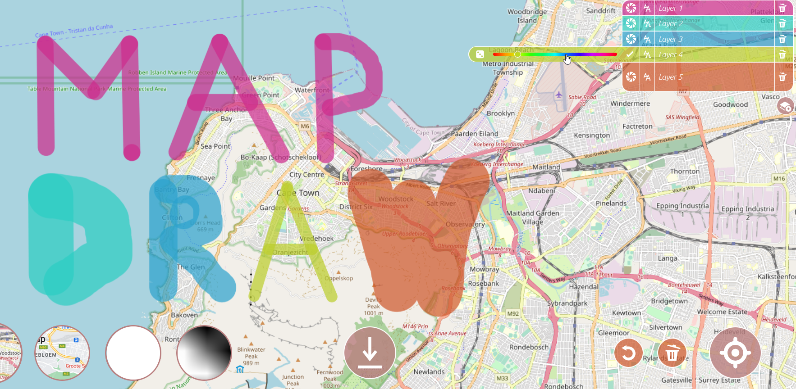
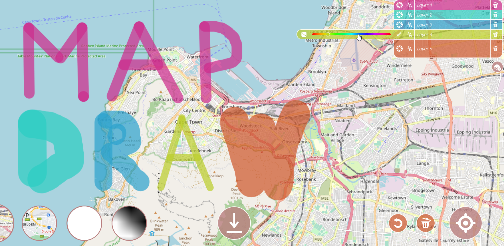

Presentation of the LostInZoom project
Présentation du projet LostInZoom
Les cartes multi-échelles interactives, comme Google Maps, OpenStreetMap, ou le Géoportail ont remplacé les cartes topographiques en papier pour la plupart des usages professionnels et quotidiens. La somme des recherches passées en cartographie nous explique comment concevoir des cartes à une échelle donnée, faites pour être imprimées sur papier, de la manière la plus lisible et la plus compréhensible. Mais ces consignes ne s'appliquent pas vraiment ux nouveaux média cartographiques, et les cartographes manquent de consignes pour concevoir des cartes multi-échelles, dans lesquelles on peut naviguer à travers les échelles de manière fluide, et il est courant pour les utilisateurs de ces cartes multi-échelles de se sentir perdu pendant quelques secondes après un zoom. Le projet LostInZoom cherche à établir un nouveau paradigme de zoom pour les cartes multi-échelles, fondé sur l'utilisation de points de repère multi-échelles qui servent d'ancres pour notre cerveau pendant le zoom. Pour établir ce nouveau paradigme de zoom, nous avons besoin de nouvelles connaissances sur la manière dont les gens perçoivent et comprennent les cartes multi-échelles. Ces nouvelles connaissances (quelles sont les ancres efficaces ?) permettront de changer la manière de concevoir les cartes multi-échelles, mais aussi les interactions entre les différentes échelles. Le projet LostInZoom est construit autour de trois piliers. Dans le premier pilier, nous allons explorer la cognition des cartes multi-échelles, et l'existence des ancres, par une approche expérimentale. Dans le deuxième pilier, nous allons développer de nouvelles techniques de cartographie automatique pour créer des pyramides de cartes multi-échelles mettant en valeur ces ancres de manière progressive et continue. Enfin, dans le troisième et dernier pilier, nous allons concevoir des modes d'interaction innovants, basés sur des animations mettant en valeur les ancres multi-échelles. Le projet sera mis en pratique dans un contexte de cartographie de crise, où les utilisateurs n'ont vraiment pas le temps de se perdre dans la carte quand ils zooment.
Multi-scale interactive maps such as Google Maps or OpenStreetMap have replaced paper topographic maps for most professional and daily uses. Past research told us how to design paper topographic maps at a given scale to make them readable and understandable by human users. But these rules/guidelines do not apply anymore, and map designers lack guidelines to make maps that are smooth to explore through scales, and it is common for a multi-scale map user to feel lost for a few seconds after a zooming interaction. The LostInZoom project (Not Getting Lost in Multi-Scale Maps: Exploring the Anchor Theory in Cartographic Zoom Interactions in the Context of Crisis Management) seeks to establish a new zooming paradigms for multi-scale maps, based on multi-scale visual landmarks that act as anchors during the zoom. To achieve this novel zooming paradigm, we need new grounding knowledge on how people perceive and understand interactive multi-scale maps, in order to design maps and interaction that make multi-scale explorations smoother. The LostInZoom project will be based on three main pillars. In the first one, we will explore the cognition of multi-scale interactive maps with an experimentation approach, in order to identify the anchors or landmarks that help a map reader locate himself when zooming. In the second pillar, we will design new cartographic generalisation techniques to derive multi-scale maps that magnify the landmarks that are important for multi-scale exploration. Finally, the third pillar will be dedicated to the design of new zooming interactions that focus on these landmarks to smooth even more the zooming exploration.
Genealogy of the project
Généalogie du projet
Le projet LostInZoom est fondé sur les recherches historiques de l'IGN sur la généralisation cartographique. Ces recherches centrées sur l'automatisation de la production de cartes topographiques par l'IGN, ont évolué vers des problématiques de visualisation multi-échelles avec les évolutions technologiques en termes de cartographie ces 15 dernières années.
Le
projet MapMuxing (2014-2019) marque ce tournant, en couplant les questions de généralisation cartographique aux questions d'interaction homme-machine. Ces questions sont maintenant au coeur des problématiques du
laboratoire LASTIG, qui accueille ce projet ERC.
The LostInZoom project builds on the historical research on map generalisation at IGN France. The focus on the automation of the production of topographic map series has evolved into the study of interactive multi-scale maps in the past 15 years.
The
MapMuxing project (2014-2019) is a key turning point, coupling the issues of map generalisation and human-computer interactions. These research questions are now a core topic in the
LASTIG lab of IGN France and Univ. Gustave Eiffel, which hosts this ERC grant.
 
